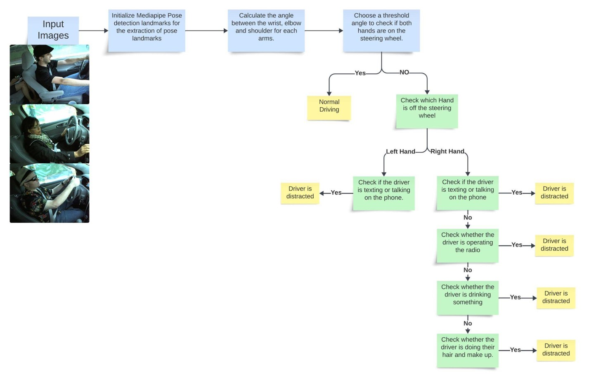
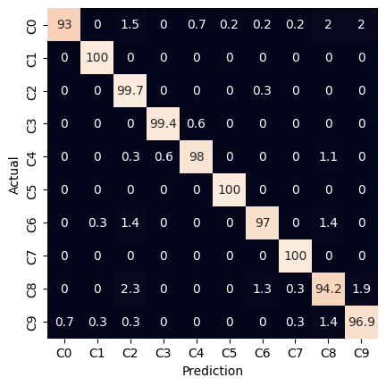
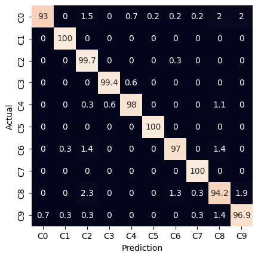
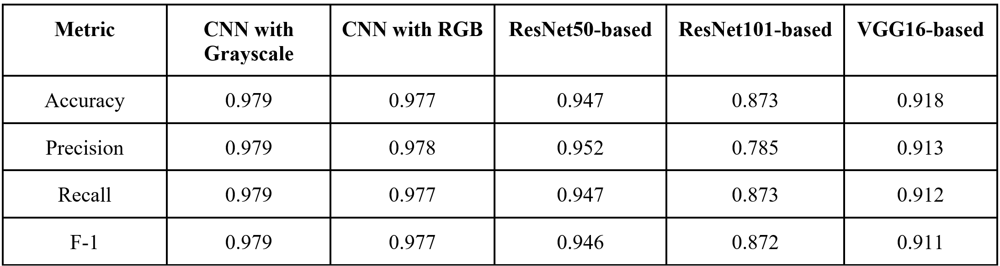
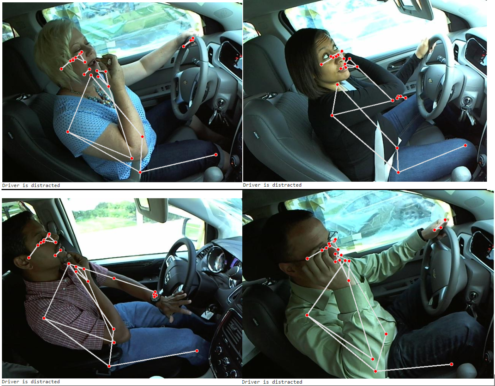

A Comparative Analysis of Distracted Driver Detection
The study addresses the critical issue of distracted driving through the investigation of two methods: Convolutional Neural Network (CNN) and Pose Estimation. It aims to develop accurate models to detect distracted driving behaviors. The CNN-based approach demonstrates high accuracy, particularly with grayscale images, and achieves faster convergence compared to transfer learning methods.

Introduction
Detecting distracted drivers is crucial for enhancing road safety and preventing accidents, injuries, and fatalities. It reduces accident rates, preserves human lives, and prevents property damage, contributing to overall road safety. Integrating technology for detecting distracted driving aligns with advancements in driver assistance systems. This project aims to contribute significantly to road safety by addressing the critical issue of distracted driving. Our methodology involves a thorough investigation of two distinct approaches for detecting instances of distracted driving: Convolutional Neural Network (CNN) and Pose Estimation.
Goal
The specific objectives include the development of a CNN model (Method 1) to detect driver behavior and the integration of facial and upper body pose estimation, including hands, to assess the level of driver distraction (Method 2).
Dataset
State Farm Distracted Driver Detection | Kaggle [1]
-
There are 22,424 images with 10 classes taken from the front console and the size is 640 x 480 pixels. The classes include normal driving(C0), texting - right(C1), talking on the phone - right(C2), texting - left(C3), talking on the phone - left(C4), operating the radio(C5), drinking(C6), reaching behind(C7), hair and makeup(C8), talking to passengers(C9). This dataset is used in CNN-based approach and Pose detection using Upper Body. For the CNN approach, the data is divided into 3 sets: training set 70%, validation set 15%, and test set 15%.
-
The image processing pipeline comprises steps as follows. In Step 1, Image Preprocessing, input images undergo cropping and resizing to 64 x 64 pixels. Additionally, an optional grayscale conversion is implemented to reduce trainable parameters, thereby optimizing computational resources. Step 2, Data Augmentation is applied to augment input images, enhancing the model's robustness through rotations, zoom, width shift and height shift. In Step 3, Model Training, the training set is utilized for model training, employing a spectrum of architectures including Convolutional Neural Networks (CNN), VGG16-based CNN, ResNet50-based CNN, and ResNet101-based CNN. Concluding the process in Step 4, Model Testing evaluates the trained model's accuracy across diverse architectures.
-
The approach laid out in Fig.1 harnesses the capabilities of Mediapipe Pose Detection to detect various driver behaviors, leveraging pose landmarks and criteria set for different distractions. It involves specifying landmarks and their spatial relationships to identify distracted driving instances accurately. The thresholds for each distracted scenario were based primarily on trial and error and then secondarily on training images from the State Farm Dataset. The thresholds were fine-tuned until the system was able to identify behaviors based on specific scenarios and gestures.
Fig.1 Diagram of Pose Detection using Upper Body
-
After the training process, it was observed that both case 1 and case 2 demonstrated the best performance compared to the other methods. The CNN with grayscale images achieved an accuracy of 97.9%, while the CNN with RGB images achieved an accuracy of 97.7%. Furthermore, each label exhibited a prediction accuracy of over 93%. Additionally, when the driver is distracted, both models in case 1 and case 2 demonstrated a high detection accuracy of 99.9%. In terms of image input, the evaluation suggests that grayscale images retain meaningful features, providing comparable results with a smaller data size. Regarding training time, it is notable that the simple CNNs in case 1 and case 2 achieve a 90% convergence much faster than models employing the transfer learning method. The simple CNNs reach 90% accuracy within the first 20 epochs, a substantial improvement compared to the transfer learning approach.
 

Fig.2 Confusion Matrix (Left) CNN with Grayscale images (Right) CNN with RGB images
Table.1 Performance Comparison of CNN Method
 -
When the forward-facing 90-degree of lidar reading detects an obstacle at a predetermined distance, the car is able to stop preventing any collision with the identified object. After the objects are removed, the car can resume following the lane.
Fig.3 Result of Pose Detection using Upper Body
- Computer Vision
- Pytorch
- Convolutional Neural Network (CNN)
- Pose Estimation
- Narathip Rodwarna
- Janmejay Rathi
- Mahi Ranka
Method
CNN-based Method
Pose Estimation Based
Result
CNN-based Method
Pose Estimation Based
Discussion and Conclusions
Advantages of utilizing Convolutional Neural Networks (CNNs) for distracted driver detection are evident in their outstanding performance, particularly with simple CNN models that outperform counterparts like Resnet50, Resnet101, and VGG16 in transfer learning scenarios. The simplicity of CNNs results in quicker convergence, achieving 90% accuracy on the validation set within 20 epochs, highlighting their ease of training. Additionally, the reduced number of trainable parameters in simple CNNs minimizes the risk of overfitting, making them well-suited for various applications. Moreover, CNNs showcase strengths in capturing meaningful patterns through filters and demonstrating translation invariance, allowing for effective recognition of movements irrespective of their position. This translation invariance, coupled with reduced sensitivity to spatial variability, enhances CNNs' robustness in handling diverse spatial patterns. Furthermore, the automatic feature learning capability of CNNs eliminates the need for manual feature engineering.
However, despite these advantages, applying CNNs to this task presents some challenges. The computational intensity of convolutional operations demands substantial resources, resulting in time-consuming and resource-intensive training. The training process also requires ample memory, posing limitations, especially in resource-constrained environments. Additionally, the need for large datasets for effective training and interpretability challenges associated with complex neural networks are factors that need consideration when working with the model.
For Mediapipe Pose detection using Upper Body we also encountered multiple challenges. Specifically, identifying distinct distracted driving behaviors like texting or reaching behind using pose landmarks alone proved challenging due to pose variations, lighting disparities, and occlusions. The model generated false positives and missed certain instances due to the complexity of the hand positions. For example, in a lot of cases, it was difficult for the module to identify the arms correctly which led to false positives.
While the analysis yielded insights into using Mediapipe Pose Detection for distracted driving detection, the results highlight the complexities and challenges in solely relying on pose landmarks only to identify the driver’s arm, eyes or mouth. Since this approach solely relies on pose landmarks, which might not capture all subtleties or contexts of distracted driving behavior therefore CNN can be considered much better for checking if the driver is distracted as it achieves an accuracy of 90%.
Related Skills
Contributors
References
[1] “State Farm Distracted Driver Detection.” kaggle.com. https://www.kaggle.com/competitions/state-farm-distracted-driver-detection/data (accessed Oct. 18, 2023).